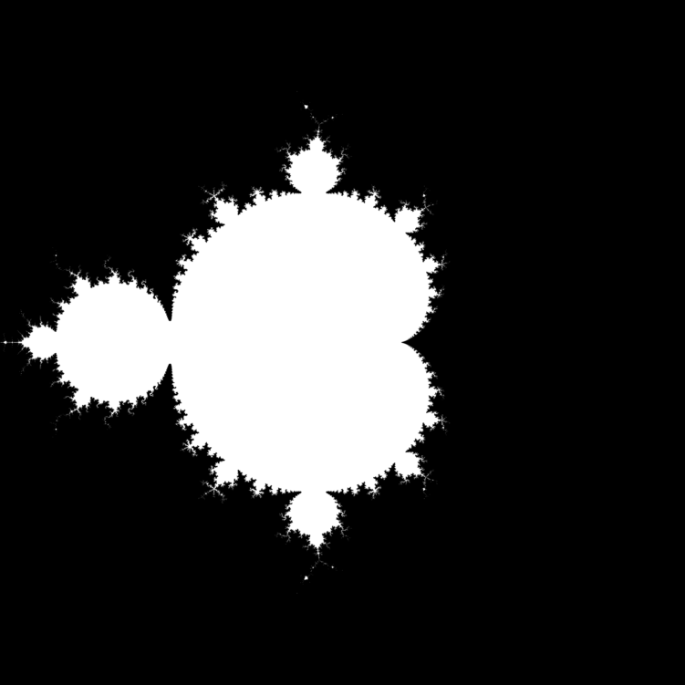
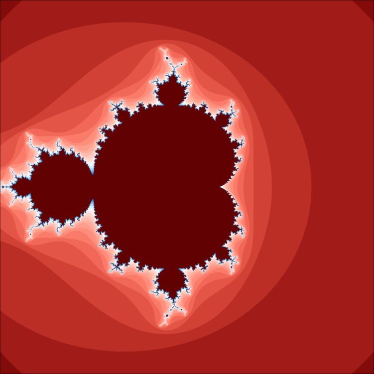

Mandelbrot Set
In the last tutorial we got a brief overview of the architecture of a GPU. In this tutorial We will elborate a bit more on Grid configuration and compute the mandelbrot set on the GPU.
Grid configuration
When we launch a CUDA kernel we use the syntax @cuda blocks=x threads=y f(a, b, c...) where f is the function and a, b, c... are its arguments.
The blocks and threads options to @cuda are used to specify the grid configuration of the kernel which is being launched.
blocks specifies the dimension and the size of the grid of blocks. This can be one, two or three dimensional. The reason for having multiple dimensions is to make it easier to express algorithms which index over two or three dimensional spaces.
threads specifies the cooperative thread array (CTA). Threads in the same CTA have access to better coordination and communication utilities. CTA's can also two or three dimensional for convenient indexing.
There are restrictions related to the grid given below.
- Maximum x-dimension of a grid of thread blocks : $2^{31} - 1$
- Maximum y-, or z-dimension of a grid of thread blocks : $65535 (2^{16} - 1)$
- Maximum x- or y-dimension of a CTA: $1024$
- Maximum z-dimension of a CTA: $64$
- Maximum number of threads per block: $1024$
Now let's go back to our SAXPY example and verify the flexibility in choosing grid configurations.
using CUDA, BenchmarkTools
function gpu_axpy!(A, X, Y)
# set tid to thread rank
tid = (blockIdx().x - 1) * blockDim().x + threadIdx().x
tid > length(X) && return
Y[tid] = A*X[tid] + Y[tid]
return
end
N = 2^20
gpu_v1 = CUDA.rand(N)
gpu_v2 = CUDA.rand(N)
gpu_v3 = copy(gpu_v2)
α = 0.48
gpu_v2 .+= α * gpu_v1
function verify_grid(args, result, numthreads, numblocks = cld(N, numthreads))
u = copy(args[3])
@cuda threads=numthreads blocks=numblocks gpu_axpy!(args...)
println("Explicit kernel launch with threads=$numthreads and blocks=$numblocks is correct: "
,result == args[3])
args[3] = u
return
end
args = [α, gpu_v1, gpu_v3]
verify_grid(args, gpu_v2, 1024)
verify_grid(args, gpu_v2, 1)
verify_grid(args, gpu_v2, 33)Explicit kernel launch with threads=1024 and blocks=1024 is correct: true
Explicit kernel launch with threads=1 and blocks=1048576 is correct: true
Explicit kernel launch with threads=33 and blocks=31776 is correct: true
Occupancy
The above exercise shows the flexibility in deciding grid configuration. However this raises an important question of how the configuration affects performance. The best way to determine is to actually measure what works best in a given scenario however that may prove to be cumbersome for most workflows. Expecially while developing an application it may not be worth our time to find the optimal configuration.
While each SM(streaming multiprocessor) might be executing 100's of threads from the perspective of the programmer, the GPU Hardware deals with warps. Each warp is a set of fixed number of threads(32 on NVIDIA hardware). Scheduling and issuing instructions is done at a per warp basis rather than a per thread basis. There is atleast one warp scheduler inside each SM whose job it is to keep the SM as busy as possible. Switching between warps(context switch) is extremely fast and essential to hide latencies such as global memory access. Whenever a warp stalls another warp is immediately switched to.
Coming back to out original question of how to determine the optimal grid configuration. One possible solution is to use the occupancy heurestic. $\mbox{occupancy} = \frac{\mbox{active warps}}{\mbox{maximum number of active warps}}$. Since each SM has a finite amount of resources. As the number of resources per thread increases, fewer of them can be concurrently executed. Occupancy can limited by register usage, shared memory and block size.
The launch_configuration function analyses the kernel's resource usage and suggests a configuration that maximises occupancy.
@show kernel_args = cudaconvert((α, gpu_v1, gpu_v3)) # Convert to GPU friendly types
@show kernel_tt = Tuple{Core.Typeof.(kernel_args)...}
kernel = cufunction(gpu_axpy!, kernel_tt)
kernel_config = launch_configuration(kernel.fun, shmem = 0)(blocks = 20, threads = 1024)For our example the configurator returns 20 blocks and 1024 threads. The occupancy API does not understand what our kernel is doing, it can only see the input types and the function definition. It's our job to figure out if the suggested configuration will work or not. It's best to keep the suggested block size in account while deciding the launch config.
For this example it's perhaps best to set the block size to 1024 and determine the grid size based on that.
Mandelbrot Set
A popular example of mathematical visualization is the Mandelbrot set. Mathematically it is defined as the set of complex numbers $c$ such $f_c(z) = z^2 + c$ is bounded.
In other words:
- $Z_0 = 0$
- \[Z_{n + 1} = {Z_n}^2 + c\]
- \[c\]is in the mandelbrot set if the value of $Z_{n}$ is bounded.
It can be mathematically shown |Z_n| \leq 2.0 $ for bounded points.
using Images
img = rand(Bool, 10, 10)
Gray.(img)dims = (3000, 3000)
mset = Array{Bool, 2}(undef, dims)
function mandelbrot_cpu(mset::AbstractArray, dims, iterations)
origin = CartesianIndex(div.(dims, (2, 2), RoundUp))
for ind in CartesianIndices(mset)
# Compute coordinates for true canvas
coordinates = Tuple(ind - origin) ./ 1000.
c = ComplexF32(coordinates[1]im + coordinates[2])
mset[ind] = mandelbrot(c, iterations)
end
end
function mandelbrot(c, iterations)
z = ComplexF32(0, 0)
for i in 1:iterations
z = z^2 + c
abs(z) > 2.0 && return false
end
return true
endmandelbrot (generic function with 1 method)mandelbrot_cpu(mset, dims, 32)
Gray.(mset)
This black and white image is no fun. To add color let's map a color to the number iterations it took $z$ to become greater than two.
mset_color = Array{UInt8}(undef, dims)
function mandelbrot(c, iterations)
z = ComplexF32(0, 0)
for i in 1:iterations
z = z^2 + c
abs2(z) > 4.0 && return i % UInt8
end
return zero(UInt8)
end
mandelbrot_cpu(mset_color, dims, 32)cmap = colormap("RdBu", 32 + 1)33-element Array{RGB{Float64},1} with eltype ColorTypes.RGB{Float64}:
RGB{Float64}(0.37862450906363854,0.005629812389804824,0.00639579230016143)
RGB{Float64}(0.511401750140007,0.04652655393466978,0.039614635593812626)
RGB{Float64}(0.6304694697815748,0.111511303470373,0.09349062211801834)
RGB{Float64}(0.7341846474081442,0.18142074006590392,0.15064199717871202)
RGB{Float64}(0.8213788222501716,0.25509282164235364,0.21136287499536927)
RGB{Float64}(0.8910797965365008,0.33147475283041355,0.276272164392164)
RGB{Float64}(0.9438288754018904,0.40845200262409787,0.34476905911577005)
RGB{Float64}(0.9830039965189913,0.48278611060443816,0.4141941306055418)
RGB{Float64}(1.0,0.5531385993434152,0.4830738846173907)
RGB{Float64}(1.0,0.6190973834013392,0.5505942126365359)
RGB{Float64}(1.0,0.6806122944900334,0.6162245746256042)
RGB{Float64}(1.0,0.7377908937319887,0.6795941045814847)
RGB{Float64}(1.0,0.7908142485796253,0.7404417566251789)
RGB{Float64}(1.0,0.8398979258332038,0.7985905981163555)
RGB{Float64}(1.0,0.8852720670401505,0.8539310704500294)
RGB{Float64}(1.0,0.9271703845649601,0.9064082739881878)
RGB{Float64}(0.9749443162453106,0.9729960643600561,0.9760354756310183)
RGB{Float64}(0.8979042299386503,0.9573644313198612,0.9903024401640127)
RGB{Float64}(0.8429105655008079,0.9319117355402927,0.9839833167236404)
RGB{Float64}(0.7850007393219273,0.9035155489426953,0.9768000840962133)
RGB{Float64}(0.72435893785698,0.8718607481283359,0.9683418382146513)
RGB{Float64}(0.6612870709584006,0.8366167646970688,0.9580626838319154)
RGB{Float64}(0.5962365033043193,0.7974464925230237,0.9452500598729462)
RGB{Float64}(0.5298439087363732,0.7540213709805738,0.9289844201989069)
RGB{Float64}(0.4629680761727147,0.7060460587259852,0.9080843400563837)
RGB{Float64}(0.39672180442974636,0.6532979969269443,0.8810251891819273)
RGB{Float64}(0.3324964124038308,0.5956897491839529,0.8458071789614362)
RGB{Float64}(0.27201828187372706,0.533364073599101,0.799722253554423)
RGB{Float64}(0.21739327339452402,0.4668109932720261,0.7391793385823607)
RGB{Float64}(0.16815701063787106,0.39670390363118646,0.6627783326784157)
RGB{Float64}(0.12187323443014847,0.32366608303519157,0.5712721112999869)
RGB{Float64}(0.07682818255970775,0.24837168208180366,0.4656186846834139)
RGB{Float64}(0.03279600471716905,0.1716696001598839,0.3473117629721944)map(x -> cmap[x + 1], mset_color)
Our task is to move this computation to the GPU. The tricky part with moving to the GPU is that the idexing gets tricky. We can use 1-D indexing then figure out inside the kernel what our 2-D index is or use 2-D index from the get go.
mset_gpu = CuArray{UInt8}(undef, dims)
function mandelbrot_gpu(mset::AbstractArray, dims, iterations)
ind = CartesianIndex((blockIdx().y - 1)*blockDim().y + threadIdx().y,
(blockIdx().x - 1)*blockDim().x + threadIdx().x)
# Check if index is valid, if not then exit
!(ind in CartesianIndices(dims)) && return
origin = CartesianIndex(div.(dims, (2, 2), RoundUp))
# Scale the 3000x3000 image to -1.5 to 1.5
coordinates = Tuple(ind - origin) ./ 1000.
c = ComplexF32(coordinates[1]im + coordinates[2]) # x + yi
mset[ind] = mandelbrot(c, iterations)
return
endmandelbrot_gpu (generic function with 1 method)blkdim = (16, 16)
@cuda blocks=cld.(dims, blkdim) threads=blkdim mandelbrot_gpu(mset_gpu, dims, 32)# copy back to host and display the same image
map(x -> cmap[x + 1], Array(mset_gpu))Thread Divergence
We mentioned in the last tutorial that threads in a warp execute the same instruction. This was not the entire picture as you can guess from the mandelbrot set example. Inside the mandelbrot inner loop we have consecutive threads exiting at different points during iteration.
for i in 1:iterations
z = z^2 + c
abs2(z) > 4.0 && return i % UInt8
endWhen threads of the same warp are following different execution paths we call it thread divergence. Even when 1 thread out of 32 follows takes a different branch there is thread divergence.
For example
if threadIdx().x % 2 == 0
# Do something
else
# Do something else
endIn the above example threads with an even index will follow the first path and the odd indexed ones will follow the second path. Inside the GPU when a branching condition is evaluated a 32-bit mask is generated for that warp (1-bit for each lane). All lanes whose corresponding mask bit is true will be active and the remaining lanes will be idle. When execution reaches a convergence point, the mask is inverted so that all lanes which were idle become active and vice versa. This kind of an IF-ELSE branch has 50% efficiency. Even if a single thread had diverged (say condition was threadIdx().x % 32 == 0) we would still be at 50% efficiency. However, nesting IF-ELSE will further reduce efficiency.
In our mandelbrot example while we definitely had a lot of thread divergence it was still beneficial because threads in a warp represented physically close pixels which diverge less.
Also, note that thread divergence refers to intra-warp divergence rather than inter-warp divergence which does not matter to performance. Because doing work efficiently at the warp level is extremely important for performance we will consider it while writing algorithms. In addition there are a number of functions that work at the warp-level such as sync_warp()and shfl_up_sync(). We will explore these in the reduction and prefix scan tutorials.